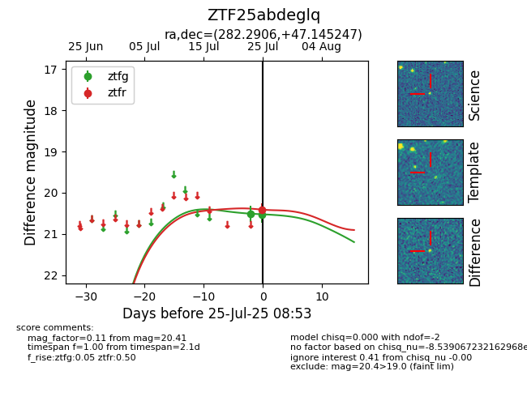

Target ZTF25abdeglq at 2025-07-25 08:53, see:
FINK: fink-portal.org/ZTF25abdeglq
Lasair: lasair-ztf.lsst.ac.uk/objects/ZTF25abdeglq
ALeRCE: alerce.online/object/ZTF25abdeglq
alt names
ZTF25abdeglq (ztf,fink)
coordinates:
equatorial (ra, dec) = (282.2906,+47.14525)
galactic (l, b) = (76.6067,+19.89409)
photometry
last ztfg=20.52, ztfr=20.41
2 ztfg, 1 ztfr detections
